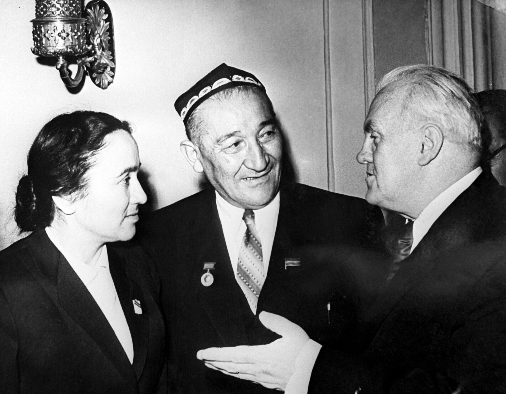

About
Ushbu sahifada G'afur G'ulomning hayoti va ijodiga oid ma'lumotlarni topishingiz mumkin.

G'afur G'ulomning hayoti
1903-yilning 10-mayida Toshkent shahrining Qoʻrgʻontegi[2] mahallasida dehqonlar oilasida tugʻilgan. Toʻqqiz yoshida otasidan, oʻn besh yoshida onasidan yetim qolgan Gʻafur Gʻulom avval eski maktabda, soʻngra rus-tuzem maktabida taʼlim olgan. 1916-yilning kuzida Gʻafur oʻqishga kiradi. Onasining vafotidan soʻng (otasi avvalroq vafot etgan), u ishlashga majbur boʻlgan. Koʻplab kasblarda oʻzini sinab koʻrgach, u nihoyat, matbaaga harf teruvchi boʻlib ishga kiradi, soʻngra, pedagogik kurslarda tahsil oladi. Toshkent pedagogika institutini tamomlagan.1919-yildan 1927-yilgacha u oʻqituvchi, maktab direktori, Maʼnaviyat uyushmasi ishchilari raisi boʻlib ishlaydi, bolalar uyini tashkil etishda faol ishtirok etadi. „Shum bola“ (1936) avtobiografik qissasida ijodkorning bolaligi, asr boshidagi Toshkent hayoti tiniq tasvirlangan.
G'afur G'ulomning ijodi
1923 yil yozilgan „Feliks farzandlari“ sheʼrida yetim bolalar haqida gapirarkan, unda yozuvchi oʻz hayotini ifodalaydi, „Maorif va oʻqituvchi“ oynomasida esa „Goʻzallik qayerda“ nomli ikkinchi sheʼri nashr qilinadi. „Dinamo“ (1931), „Tirik qoʻshiqlar“ (1932) toʻplamlarida shoir ruhidagi betakrorlik, milliy oʻziga xoslik aks etdi. Insonga xos mangu tuygʻular „Qish va shoirlar“ (1929), „Non“ (1931), „Toshkent“ (1933), „Qutbda saylov“ (1937), „Men Yahudiy“ (1941), „Qish“ (1941), „Xotin“ (1942), „Afsuski, afsusni qoʻshib koʻmmadi“ (1945) singari sheʼrlarida aks etdi. „Bogʻ“ (1934), „Sogʻinish“ (1942), „Kuz keldi“ (1945), „Kuzgi koʻchatlar“ (1948) singari sheʼrlarida obod bogʻ, saxiy bogʻbon, umiddagi kelajak gavdalanadi. Ota timsolida aks etgan „Sen yetim emassan“ (1942), „Sogʻinish“ (1942), „Biri biriga shogird, biri biriga ustod“ (1950), „Sizga“ (1947), „Bahor taronalari“ (1948) singari sheʼrlarida yurt, xalq, kelajak mas’uliyati tasvirlanadi. „Netay“ (1930), „Yodgor“ (1936), „Shum bola“ (1936-1962) qissalari, „Hiylai sharʼiy“ (1930), „Mening oʻgʻrigina bolam“ (1965) singari hikoyalarida qahramon xarakterining milliy betakrorligini aks ettirgan. 1943-yilda Oʻzbekiston Fanlar Akademiyasiga haqiqiy aʼzo boʻldi. Akademik sifatida u adabiyot tarixini, yozuvchilar ijodini („Navoiy va zamonamiz“ (1948), „Folklordan oʻrganaylik“ (1939), „Jaloliddin“ dramasi haqida" (1945), „Muqimiy“ (1941) yoritib berdi. Vatan himoyachisi mavzusi Gʻofur Gʻulomning 1941 – 1945 yillardagi keyingi ijodida yanada rivojlandi va chuqurlashdi . Shu bilan bir qatorda, u odamlarni „bor sabri, bor iqtidori“ni fashistlar ustidan gʻalabaga qaratishga chorlaydi. Shoir urushdan keyingi davrlardagi mamlakatning iqtisodiy rivojlanishida oʻzbek ayolining rolini alohida taʼkidlab oʻtdi. „Ikki akt“ dostonida u qishloqlarning qayta joylashuvini madh etarkan, oʻzbek dehqonchiligi va ularning kelajak orzu tuygʻularini ifodalaydi. Ushbu mavzu „Qoʻqon“ dostonida ham yangraydi. Oʻz vaqtida u xalqda ommabop boʻlgan va qishloq xoʻjaligini mustahkamlash kurashida targʻibot vazifasini bajargan Gʻafur Gʻulom oʻzining juda yaxshi sheʼrlarini bolalar va oʻsmirlar uchun bagʻishlagan: „Ikki bolalik“, „Bilaman“, „Seni Vatan kutmoqda“. Urush yillarida Gʻofur Gʻulom „Sen yetim emassan“, „Seni kutyapman, oʻgʻlim!“, „Vaqt“, „Kuzatish“, „Ayol“, „Bizning koʻchada ham bayram boʻlajak“ kabi ajoyib sheʼrlar yaratgan. „Seni kutyapman, oʻgʻlim!“ sheʼrida shoir front ortida oʻzlarining qahramonona mehnatlari orqali dushman ustidan gʻalabani yaqinlashtirgan otalarning sabri va kuchini madh etadi. Mushkul kunlarda insonlarning bolalarga boʻlgan muhabbati buyuk maʼno kasb etgan. Bu – ota-onasini yoʻqotib, oddiy odamlarning sidqidildan qilgan gʻamxoʻrligi haqida soʻz boruvchi ajoyib „Sen yetim emassan“ sheʼrida yaqqol seziladi. Shoirning urush yillarida yozilgan „Bahaybat“, „Gʻalabachilar qoʻshigʻi“, „Vaqt“, „Xotin“ sheʼrlari yuqori fuqarolik sheʼriyatining namunalari hisoblanadi. Ular „Sharqdan kelmoqdaman“ toʻplamidan joy olgan. Urushdan keyingi yillar Gʻafur Gʻulom bir qator sheʼriy toʻplamlarini nashrdan chiqaradi: „Yangi sheʼrlar“, „Oʻzbekiston olovlari“, „Onalar“, „Oʻzbek xalq gʻururi“, „Tong qoʻshigʻi“, „Yashasin, tinchlik!“, „Bu – sening imzoing“. Ushbu toʻplamlardan joy olgan sheʼrlarda shoir tinchlik davrining muhim savollariga javob topishga, oʻzbek xalqining mehnat faoliyatidagi muvaffaqiyatlarini koʻrsatishga intiladi. Asarlarining qahramonlari – dunyo ishlari va osoyishta mehnat bilan band sobiq askar. Gʻafur Gʻulom – tinchlik, doʻstlik va xalq baxtining joʻshqin kurashchisi. Shoir tinchlik uchun kurashga bagʻishlangan toʻplam yaratgan. Ulardan eng yaxshilari: „Dunyo minbaridan“, „Yashasin, tinchlik!“, „Bu – sening imzoing“ va boshqalar. Gʻafur Gʻulom, shuningdek, Pushkin, Lermontov, Griboyedov, Mayakovskiy, Nozim Hikmet, Rustaveli, Nizomiy, Shekspir, Dante, Bomarshe va boshqalarning asarlarini oʻzbek tiliga mohirona tarjimasi, shuningdek, adabiyotshunoslik va publitsistik maqolalari bilan mashhur. Gʻafur Gʻulomning dunyo qarashi va badiiy didining shakllanishida Vladimir Mayakovskiy asarlari katta taʼsir koʻrsatgan. Gʻofur Gʻulom oʻzining maqolalaridan birida shunday yozadi: "Men… rus mumtoz ijodkorlarini bilaman va ularni sevaman va ularning koʻplab asarlarini ona tilimga tarjima qildim. Lekin „men uchun vazn, lugʻat, timsol, sheʼrning ohang tuzilishi sohalarida eng serqirra va cheksiz imkoniyatlarni ochgan“ Mayakovskiyning shogirdiman, deyishni istayman". Mayakovskiy satirasidagi dargʻazab, tanqidiy kinoya, lirikasidagi bagʻoyat ulkan tuygʻu kuchidan tashqari, men oʻzimda… uning usullarining dovyurak notiqlik kuchini, metaforalar jasorati, mubolagʻalar ifodaliligini jamdashga harakat qildim. Hatto, usulli, ohangli va maʼno ifodaliligini oshiruvchi sheʼr qurilishidan ham oʻzbek sheʼr tuzimida foydalanishimga toʻgʻri keldi". Bular Gʻofur Gʻulomning koʻplab sheʼrlarida namoyondir, masalan: „Turksib yoʻllarida“, „Ona yer“, „Yashasin, tinchlik!“. Gʻafur Gʻulom ijodining urushdan keyingi davri oʻzbek adabiyoti rivojida muhim oʻrin egalladi. Urushdan avvalgi davrlarda uning sheʼrlarida urushdan oldin ular tomonidan yaratilgan narsalarni qoʻlda qurol bilan himoya qilayotgan, yerda tinchlik istayotgan odamlarning ichki kechinmalari va oʻy-xayollari tasvirlangan. Shoirning urushdan keyingi davr lirikasi uning urush yillar lirikasining mantiqiy davomi va rivoji hisoblanadi, „Unutma, Vatan seni kutmoqda!“ va „Gʻalaba bayrami“ sheʼrlari – shoirning mazkur ikki ijodiy davrining bogʻlovchi halqasi kabidir. Gʻulom 1966-yilning 10-iyunida vafot etdi. Chigʻatoy qabristoniga dafn etildi.
Hikoyalar
She'riy to'plsmlari
She'rlari
Asarlar
Izohlar
G'afur G'ulom haqida izohlar
Abdulla Oripov
G‘afur G‘ulomni “milliy ruhni, xalqning dardini so‘z bilan ifodalashda ustozlardan biri” deb ta’riflagan.
Hamidaxon Holikova
G‘afur G‘ulomning asarlarini “insoniy qadriyatlar va ma’naviyatni yuksaltiruvchi” deb ta’riflagan.
Nazira Behbudiy
G‘ulomning ijodini “o‘z zamonasining ijtimoiy haqiqatlarini ochiq-oydin aks ettiruvchi” deb yuqori baholagan.
Erkin Vohidov
G‘ulomning ijodini “bolalar adabiyotidagi samimiylik va chin dardni ifodalashda o‘rnak” deb e’tirof qilgan.
Chingiz Aytmatov
G‘afur G‘ulomni “xalqning ichki hissiyotlarini chuqur anglay olgan ijodkor” sifatida yuksak baholagan.